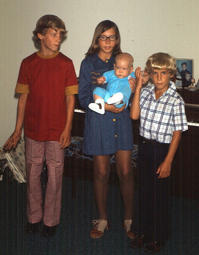

| Pioneering Work With Computer Graphics | |
 |
Photo: The Fairbairn kids, 1973 in Huntsville, Alabama. One of the places where Bob's job sent us was Huntsville, Alabama. In the years that we spent there, we thoroughly enjoyed the features of that part of the U.S. We found friendliness, hospitality, and a church that we were soon involved with. Our youngest son, Matt, was born there. There was beautiful scenery and outdoor activities, including good fishing nearby. As for food, we would like to have some real hickory-smoked pork BBQ or a plate of catfish and hush puppies again. While working in Huntsville, Bob was involved in some interesting and rewarding computer software development efforts. Following is the story of one of those projects. |
|
In 1973, most computer terminals displayed only text, and in a single color. The technology of interactive computer graphics was in its very early stages. IBM and a few other companies were making "graphic terminals" but, because of the hardware requirements, these were sizable, expensive systems by themselves. Also, there was not much opportunity for end-users such as scientific researchers to interact with running programs on large-scale computers. The process generally went like this: 1) The user made up a "batch job", usually as a deck of punched cards. 2) Computer operators fed the job decks into the computer via a card reader. 3) After the job finished running, the user would get printouts to help him analyze the results. 4) If the user needed to change one or more parameters, the process was repeated. A lot of time was lost in making changes to the job deck, resubmitting the job, and waiting for the results.
The U.S. Army at Redstone Arsenal in Huntsville Alabama contracted with Bob's employer, System Development Corporation (SDC) to develop and manage a computer facility to support research in ballistic missile defense. This was the era of the Cold War, and there was much concern about the possibility of nuclear missiles being aimed at the U.S. from the USSR or China. The Army wanted its researchers to be able to interact with powerful computers through color graphics terminals, using commercially available hardware. This would be a major advance from the traditional batch processing environment. For the main processing power, an interconnected combination of Control Data Corporation (CDC) 6400 and 7600 Computers was chosen. CDC's large computers were especially designed to handle heavy computational loads, as would be needed for the types of research the Army had in mind. The CDC 7600 was among the most powerful commercially available computers at that time. The graphics subsystem consisted of several color CRT display units, keyboards, and trackball pointing devices (The computer mouse wasn't yet generally available). The system used fixed-head disks to refresh the display screens, which were basically color TV units. Fixed-head disks were one of the few feasible ways to produce displays digitally before solid-state memories became widely available. All of these devices were connected to an Interdata minicomputer. The minicomputer was also connected to the CDC computers by a high-speed data channel. The pixel resolution and color resolution of the displays were crude compared to current systems, and the processing power and storage capacity of the minicomputer were far less than an average current smartphone. Nevertheless, at the time, all of this equipment was quite impressive. The hardware systems, as delivered, were complete. However, there was no suitable software available for the minicomputer to be able to do its job, and the CDC computers had no software to support an interface to an interactive graphics system. That is where I (Bob) became directly involved. The first category of software that was needed was the low-level driver programs for the Interdata minicomputer to control the devices attached to it. A critical part of this was the data channel connection to the CDC computers. As far as I know, this particular combination had not been done before. An analyst who was familiar with the CDC systems worked on that side of the interface, while I worked on the minicomputer side. Because we needed unrestricted access to the CDC computers, we had to do our testing at night when there were no other users. I clearly remember a late-night session when we first saw the evidence of test data streaming back and forth through the interface. That was a major milestone. I developed the minicomputer driver software for the displays, keyboards, and trackball devices and tested it for its ability to provide a responsive interface for the eventual users of the graphic terminals. The programming environment on the CDC computers used the FORTRAN programming language, so I developed a set of FORTRAN subroutines to give programs access to the functions of the graphic terminals. The subroutines provided the way for points, line segments, arcs, and text strings of a particular color and size to appear in a specified location on the graphic display screens. From these basic elements, complex displays could be generated and modified as desired. Also, subroutines were made available to receive keyboard input and trackball pointing data from the graphic terminals. The goal was to give the user at a terminal the ability to communicate directly with his program in the CDC computer. When all of the hardware and software elements were working well together, we released the system for general use, and the researchers began developing test cases for various theories and scenarios. At the terminals the researchers were now able to see results almost immediately in graphic and numeric form, and they could make changes to various parameters as desired to see the results of such changes. These days, we take for granted the ability to interact quickly with powerful computers through a graphical interface, but in 1973, what we accomplished there in Huntsville was a big deal. For our efforts, we who were involved in the development process received an SDC Achievement Award, a nice repayment for the extra hours and nighttime sessions. So, how would this interactive graphics system look now, with the rapid advances in computer technology? If they exist now, the CDC computers could probably still do a respectable job of scientific computation. On the other hand, the whole graphics subsystem has been overwhelmed by advances in display technology. The displays were limited to eight colors and, as I recall, the pixel resolution was 512 by 512. Every current personal computer, tablet, and smartphone goes far beyond those specifications. I can't be certain, but I suppose that the parts of the graphics subsystem went into a scrap pile at some point. In any case, I have a lot of good memories of being out there on the cutting edge. |
|